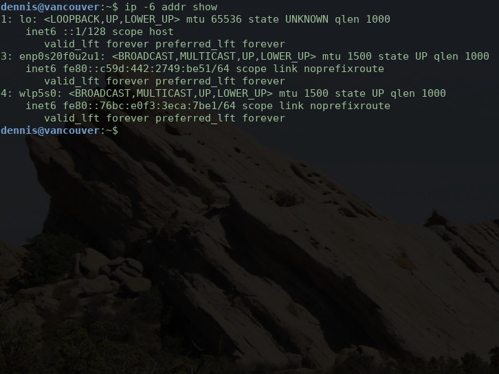

Nach Abschluss dieser Einheit kannst du ‚Ķ Die Entwicklung des Internets zeitlich einordnen und die wichtigsten Meilensteine benennen. Das Internet vom World Wide Web abgrenzen und beide Begriffe im Sinne ihrer Bedeutung verwenden. Die wesentlichen Technologien des World Wide Web aufz√§hlen und ihr Zusammenwirken beschreiben. Die Entwicklung des World Wide Web von der ersten Idee bis zum heutigen Stand nachvollziehen. üèÅ
1969: Das Internet kommt zur Welt 1970 – 1979: Erste Internetprotokolle 1980 – 1989: Wandel zum modernen Internet 1990 – heute: Das World Wide Web erobert die Welt Bildnachweise: Pixabay: Free-Photos, Pixabay: CopleyNathan, Pixabay: jed_ant, old-pc-windows-95.jpg
1969, Vereinigte Staaten von Amerika Die ersten vier Rechner des ARPANET gehen online Steve Crocker schreibt den RFC #1
1971: Der Vorläufer der E-Mail wird erfunden 1973: TCP/IP war damals nur ein Protokoll 1977: Weltweite Demonstration der Technik 1979: Rogue wird das erste Multi Player Game Bildnachweis: https://drl.chaosforge.org/images/12.png
1983: Geburt des Internets – Im ARPANET wird auf TCP/IP umgestellt 1984: Die Uni Karlsruhe empfängt die erste E-Mail Deutschlands Foto: Uli Deck 1985: Mit symbolics.com wird die erste .com-Domain registriert 1989: Erstmals wächst das Internet auf mehr als 100.000 Teilnehmer 1989: Tim Berners-Lee skizziert seine Ideen für das World Wide Web
1990: Der Internet-Toaster wird erfunden 1991: Freigabe des Internets zur kommerziellen Nutzung 1991: Im CERN steht der erste Webserver der Welt 1993: Bereits über 500 Webserver außerhalb des CERN 1994: Pizza Hut führt die Onlinebestellung von Pizza ein 1995: Der Vatikan ist von nun an im Internet vertreten 1995: Sun veröffentlicht die Programmiersprache Java 1995: Die ersten Arbeiten zu IPv6 werden begonnen …
Alles begann mit einer einfachen Idee Die aber auch bald ihre Kritiker fand Das World Wide Web ist ein großen Misthaufen mit ein paar Perlen drin.
Von Tim Berners-Lee erfunden HTML: Beschreibungssprache für die Dokumente und Inhalte im Web URL: Formales Schema zur Adressierung aller Web-Ressourcen HTTP: Einfaches Übertragungsprotokoll zum Abruf der HTML-Dateien Nachträglich hinzugefügt CSS: Stylesheet-Sprache zur Gestaltung von HTML-Dateien JavaScript: Einfache Sprache für interaktive Elemente im Browser WebSockets: Zusätzliches Übertragungsprotokoll zur Kommunikation mit dem Server Tim Berners-Lee im Jahr 2014 Bildnachweis: Wikipedia Der erste Webserver der Welt. Bildnachweis: Wikipedia
N√§chstes Bild Vorheriges Bild Nochmal von vorne Eigentlich solltest du ja lernen. Du kannst dich aber gerade nicht motivieren. Bildnachweis: Pixabay: JESHOOTScom Du startest daher einen Browser und rufst YouTube auf. Bildnachweis: Pixabay: TymonOziemblewski Der Browser sendet daraufhin eine HTTP-Anfrage an den Server von YouTube. GET / HTTP/1.1 Host: www.youtube.com User-Agent: Mozilla/5.0 (X11; Fedora; Linux x86_64; rv:61.0) Gecko/20100101 Firefox/61.0 Accept: text/html,application/xhtml+xml,application/xml;q=0.9,*/*;q=0.8 Accept-Language: de-DE,en-US;q=0.7,en;q=0.3 Accept-Encoding: gzip, deflate, br Connection: keep-alive Upgrade-Insecure-Requests: 1 Der Server verarbeitet die Anfrage und sendet eine HTTP-Antwort zur√ºck. HTTP/1.1 200 Connection established content-type: text/html; charset=utf-8 cache-control: no-cache x-xss-protection: 1; mode=block; report=https://www.google.com/appserve/security-bugs/log/youtube strict-transport-security: max-age=31536000 content-encoding: br x-frame-options: SAMEORIGIN expires: Tue, 27 Apr 1971 19:44:06 EST x-content-type-options: nosniff date: Wed, 22 Aug 2018 00:28:14 GMT server: YouTube Frontend Proxy X-Firefox-Spdy: h2 <!DOCTYPE html> <html> ... </html> Im Datenteil der Antwort befindet sich die geforderte HTML-Seite. <!DOCTYPE html> <html> <head> <meta charset="utf-8" /> <title>YouTube</title> <link rel="shortcut icon" href="favicon.svg" /> <link rel="stylesheet" href="startpage.css" /> <link rel="stylesheet" href="video_preview.css" /> <link rel="stylesheet" href="social_plugins.css" /> <script src="video_loader.js"></script> <script src="video_add_player.js"></script> <script src="comments_and_likes.js"></script> </head> <body> <nav id="sidebar"> <div id="nav-start" class="menu-item">Start</div> <div id="nav-trends" class="menu-item">Trends</div> <div id="nav-abos" class="menu-item">Abos</div> ‚Ķ </nav> <main> <h2>Empfohlen</h2> ‚Ķ </main> </body> </html> Die Stylesheets mit den Darstellungsangaben werden gesondert geladen. /* * Basic screen layout with header and main body */ html, body { min-height: 100vh; } body { display: flex; flex-direction: column; header { margin: @padding @padding 0 @padding; } main { margin: @padding; margin-top: @padding / 2; flex-grow: 1; } .fullscreen { margin: 0; } ‚Ķ } ‚Ķ Ebenso wie der JavaScript-Code f√ºr die interaktiven Seitenelemente. "use strict"; // Built-in plugins import I18nPlugin from "./i18n.js"; import BreadcrumbPlugin from "./breadcrumb.js"; import IconLinkPlugin from "./icon_link.js"; import ToastPlugin from "./toast.js"; import RedirectHomePlugin from "./home.js"; import The500ScreenPlugin from "./screens/500.js"; import The404ScreenPlugin from "./screens/404.js"; import RouterPlugin from "./router.js"; import VideoPlayerPlugin from "./video_player.js"; // Local configuration (may contain extra plugins) import config from "../config.js"; // Instantiate all plugins let pluginClasses = [ I18nPlugin, BreadcrumbPlugin, IconLinkPlugin, ToastPlugin, SyntaxHighlightPlugin, RedirectHomePlugin, The500ScreenPlugin, The404ScreenPlugin, RouterPlugin, VideoPlayer, ]; let plugins = {}; let instances = []; pluginClasses.forEach(pluginClass => { let plugin = new pluginClass(); let name = plugin.name ? plugin.name : pluginClass.name; plugins[name] = plugin; instances.push(plugin) }); export default plugins; Sie alle werden vom Browser ausgef√ºhrt, wodurch die Seite auf dem Bildschirm erscheint. Bildnachweis: Pixabay: JuralMin Die Ablenkung hat echt gut getan. üêï Mit frischem Schwung gehst du nun an deine Hausaufgaben. Bildnachweis: Pixabay: janf93
1991: Der Linux-Kernel 1992: Personal Digital Assistants 1994: Der Onlinebuchhändler Amazon Bildnachweis: Pixabay: Reisefreiheit_eu 1995: Taskleiste, Startmenü, Desktop und Papierkorb Bildnachweis: PCWorld 1995: AuctionWeb, später bekannt als eBay Bildnachweis: Pixabay: succo 1997: BackRub heißt jetzt Google Bildnachweis: Pixabay: PhotoMIX-Company 1997: Netflix verleiht noch Videokassetten Bildnachweis: Pixabay: Free-Photos  1998: RFC 2460 zu IPv6 1999: Filme auf DVD Bildnachweis: Pixabay: StockSnap 1999: Mac OS X, heute bekannt als macOS Bildnachweis: virtualboxes.org
Aufgabe 1: Die Geschichte des Internets a) Wie hieß der technische Vorläufer des heutigen Internet? ADANET ARPANET Darker Net Annabeth b) In welchem Jahr gingen die ersten Rechner online? 1959 1963 1969 1971 c) Welches war die erste .com-Domain der Welt? internet.com graphics.com cern.com symbolics.com d) In welcher Einrichtung wurde das World Wide Web erfunden? Im europäischen Kernforschungszentrum CERN In der europäischen Weltraumbehörde ESA Im deutschen Zentrum für Luft- und Raumfahrt DLR Im Karlsruhe Institute of Technology KIT Aufgabe 2: Technisches zum World Wide Web a) Was ist ein Hypertext? Ein nicht-linearer Text mit Absprüngen und Verlinkungen Ein technisch-orientierter Text mit multimedialen Inhalten Ein für Computern lesbarer Quelltext nach der Compilierung Ein besonders effizient komprimierter, natürlichsprachlicher Text b) Welche drei Technologien erfand Tim Berners-Lee in den Anfangstagen des Web? WebSockets Das AJAX-Prinzip Das HTML-Format Den Aufbau einer URL Webanwendungen Das HTTP-Übertragungsprotokoll CSS-basierte Stylesheets TCP/IP-fähige Betriebssysteme c) Auf welchem Computermodell entwickelte Bernes-Lee die ersten Webserver und Browser? Commodore C64 Apple II Atari ST NeXT Cube SPARCstation DEC VAX PDP-11 IBM AS/400 SGI Indigo Intel 80486 LCARS d) Wie lautet die vollständige URL der DHBW Karlsruhe? karlsruhe.dhbw.de www.karlsruhe.dhbw.de https://www.karlsruhe.dhbw.de https://www.karlsruhe.dhbw.de/ https://www.karlsruhe.dhbw.de/dhbw-karlsruhe/ https://www.karlsruhe.dhbw.de/en/general/about-us.html https://www.karlsruhe.dhbw.de/en/general/about-us.html?lang=en Lösung: Aufgabe 1: 2, 3, 4, 1; Aufgabe 2: 1, 3+4+6, 4, 4
Daran solltest du denken ‚Ķ Dies war ein eher kleines Selbststudium, die nachfolgenden werden umfangreicher sein. Mehr Folien, mehr Text, mehr Geschichten, mehr von allem. üôÇ Zus√§tzlich werden sie auch kleinere Programmieraufgaben und Übungen beinhalten. Plane also ausreichend Zeit f√ºr dein Selbststudium ein! !
Creative Commons Namensnennung 4.0 International Beliebiges Teilen ist erlaubt Die Unterlagen dürfen bearbeitet und verändert werden Wenn die Namens- und Urheberangaben erhalten bleiben Und keine weiteren Einschränkungen auferlegt werden §
 1969: Das Internet kommt zur Welt
1969: Das Internet kommt zur Welt


 Der erste Webserver der Welt.
Der erste Webserver der Welt.


 1991: Der Linux-Kernel
1991: Der Linux-Kernel
 1992: Personal Digital Assistants
1992: Personal Digital Assistants
 1995: Taskleiste, Startmenü, Desktop und
1995: Taskleiste, Startmenü, Desktop und
 1999: Filme auf DVD
1999: Filme auf DVD
 1999: Mac OS X, heute bekannt als macOS
1999: Mac OS X, heute bekannt als macOS